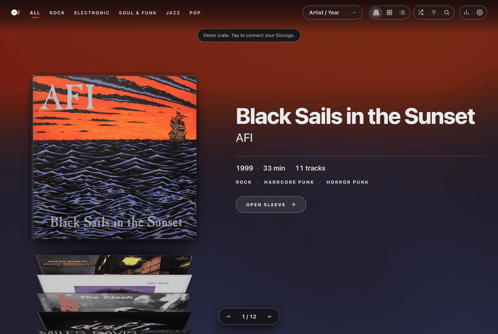
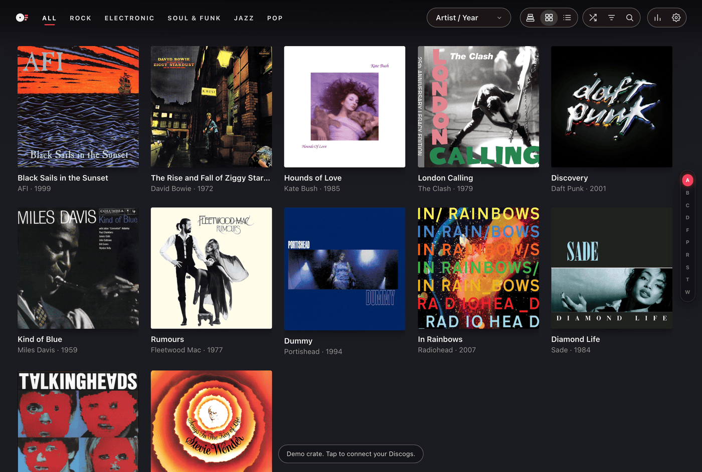
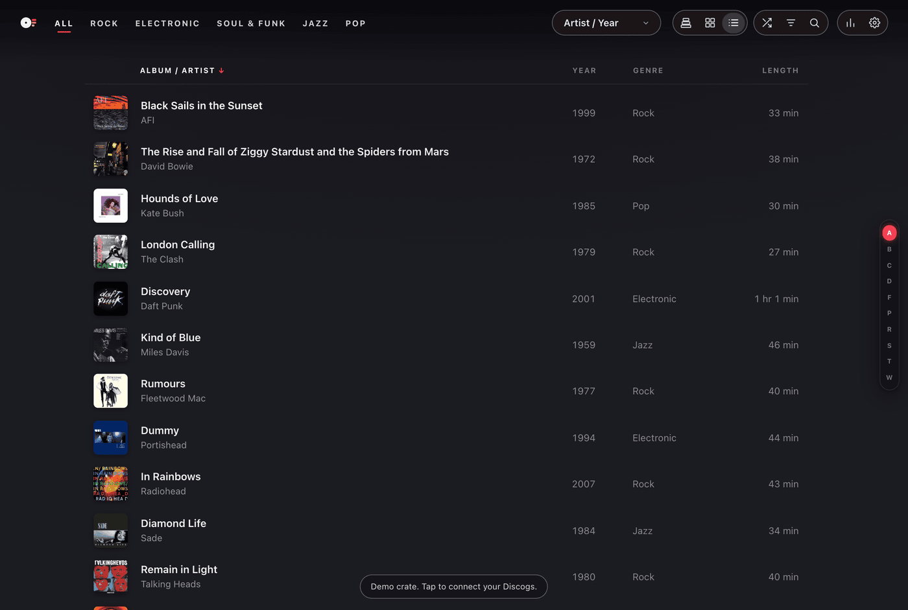

Digging the Crate
Spindex recreates the tactile satisfaction of thumbing through physical vinyl sleeves at a record shop.
Whether you prefer flipping through album art in three dimensions, scanning rows in a grid, or reviewing a dense catalog list, Spindex provides three dedicated views to fit your browsing mood.
3D Crate Gestures and Controls
The default Stack view renders your collection inside a virtual wooden crate with realistic 3D perspective and depth:
- Mouse Wheel & Trackpad: Scroll up or down over the crate to flip through records smoothly.
- Touch Gestures: On mobile devices or tablets, swipe vertically across the sleeves to pull records forward or push them back.
- Direct Clicking: Click on any record peeking out behind the front sleeve to jump directly to it.
- Ambient Glow: As each record steps into the front position, the background subtly casts soft, ambient lighting matching the primary color palette of that album cover.

Switching Views: Stack, Grid, and List
Use the view switcher in the header (or floating pill on mobile) to toggle between browsing formats:
- Stack View (Key 1): The signature 3D record crate. Perfect for deep listening sessions, tactile exploration, and discovering forgotten gems.
- Grid View (Key 2): Displays album covers in a responsive multi-column gallery. Ideal when you want to scan across dozens of albums simultaneously.
- List View (Key 3): A high-density table detailing artist, album title, release year, label format, and genre tags. Useful for cataloging, sorting, and systematic review.


Keyboard Shortcuts
Spindex is designed for full keyboard control without needing a mouse:
- ↑ / ↓ or ← / →: Move forward and backward through records.
- Enter: Open the active record gatefold sleeve to inspect tracklists, liner notes, and lyrics.
- A to Z: Jump instantly to the first record by an artist starting with that letter.
- /: Focus the search bar.
- 1, 2, 3: Toggle between Stack, Grid, and List views.
- 4: Launch full-screen Screensaver mode.
- Esc: Close any active drawer, album sleeve, or modal.
- ?: Open the keyboard shortcuts reference card.
Using the Jump Rail
Along the right edge of the screen, an interactive jump rail displays either alphabetical markers (A to Z) or decade markers depending on your current sorting order.
Click or drag your finger down the jump strip to skip past hundreds of records and land precisely at the section you want.